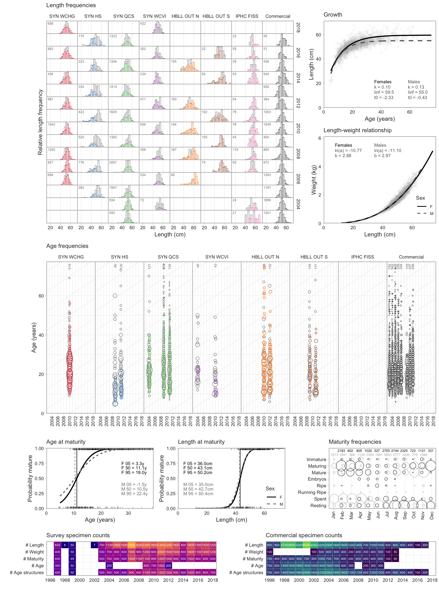
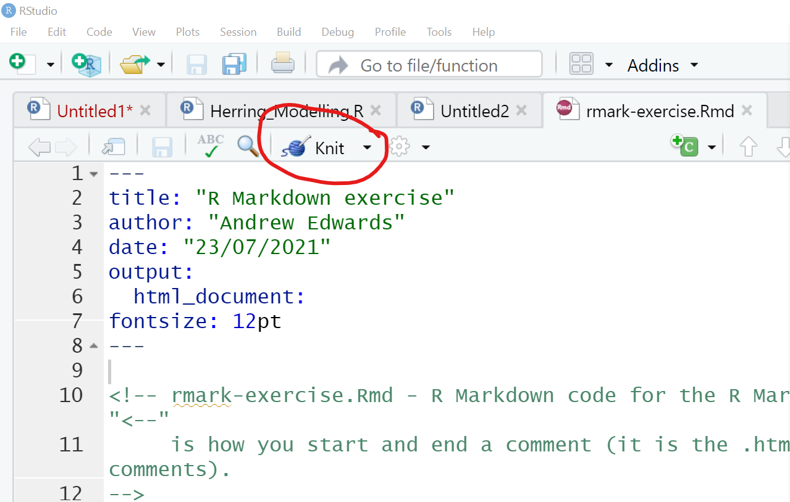
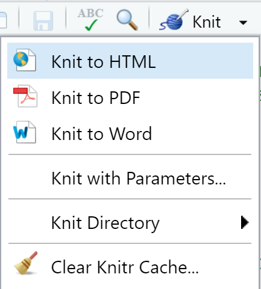
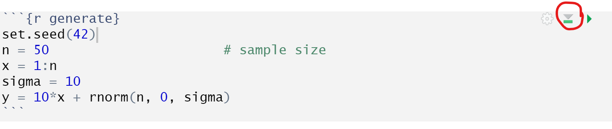

3 R Markdown
This module consists of text, example code, and two exercises to gently introduce to the world of R Markdown.
3.1 Motivation
Say you were sent some tree data from a colleague, consisting of lengths and diameters of some trees repeatedly measured over 30 years. You then spent a month writing lots of R code to analyse the data. Your code also produces beautiful figures and tables, that you then manually copied into a Word document. You also had to write lots of text, including calculations such as the simple
The average tree height was 10.1 m.
Then your colleague sheepishly tells you that someone introduced an error when extracing the data from their tree-size database, and so you need to redo everything. Your heart sinks with the prospect of re-running all your code and making sure you manually copy the correct new figures into your document. Oh, and you need to redo the tables and check all the numbers in your text.
The alternative modern approach is to use R Markdown. The idea is that you can generate a ‘dynamic report.’ You write code that contains a mixture of your R code and your write up all in one place. You can use this for short analyses, scientific manuscripts, or even a complete thesis. For shorter documents you will have a single R Markdown file, and for more complex documents it’s better to break your work up into individual files that are linked together, such as chapters for a thesis.
This module is aimed to get biologists started with the basics without too much extraneous information. Having gone through this module you will then be in a good position to learn more details from the online Definitive Guide to R Markdown and the RStudio introduction, which are aimed at a general statistical audience (rather than specifically biologists).
A key concept is that everything is written as code. You do not have to manually point and click anything, or copy and paste figures between directories. So once you understand how something works or have figured out some formatting that you like, you can just copy that code and use it elsewhere.
Example application
A recent 328-page document we wrote in R Markdown is A reproducible data synopsis for over 100 species of British Columbia groundfish. For each of 113 species, we produced two pages of figures:

and

Do not worry about the details – the point here is that for each species the layout of the figures is identical (even to show no data when none are available). Producing each figure and manually inserting them into a Word document would be extremely tedious and time-consuming. Instead, the production of the document is automated using R Markdown.
Furthermore, the work is transparent and traceable. Because the code produces the figures (they are not pasted in from somewhere), we can trace back from the R Markdown code to see the R code that:
- pulled the data from databases
- fit models
- generated plots.
In particular, we intend to periodically update the document as new data become available. While still a lot of work, it is less daunting knowing that the code is already available.
On a practical level, the report has allowed anyone to see the data that are available, and has consequently increased data transparency between Fisheries and Oceans Canada, the fishing industry, non-governmental organizations, and the public.
This is admittedly a very advanced example with a ton of code (several new R packages) and work behind it, but the idea is to show you what is possible and what you can work towards.
3.2 Basic idea
In the above tree example, if using Word, for example, you would have a sentence that says
The average tree height was 10.1 m
The “10.1” is hard-wired into your text, and you typed it on from the value
“10.1” that your R code calculated (in a variable you calculated, let’s say you
called it avge_height).
In your R Markdown document you have your R code and your text write up. You would equivalently have:
Instead of “10.1” you refer directly to the variable avge_height that you
have already calculated. When you ‘render’ your R Markdown document (convert it
from code into .pdf, .html or other formats), it
automatically fills in the avge_height value as “10.1.” The
means that the next bit of code (until the next backtick) should be evaluated using R, and the result inserted.
This is the basic idea. Then, when your colleague mentions the error (or, say, provides you with extra data) you can just re-run your code and the “10.1” will be automatically updated in your document. This concept extends to your tables and figures – they can all be automatically updated.
3.3 Simple example
Here we will generate some data, show some of it in a table, plot it, and show the results of fitting a simple linear regression. Read through this and then you will download and run the code in the exercise.
Generate data
First we’ll need some libraries:
Now generate some data:
[1] 50So we are showing our R code here (we can choose to
hide it if we like), and it has been executed, yielding the printed output of
the value of n (because of the final line of the code).
We can also embed results from R within sentences, for example:
We have a sample size of 50.
This is done (as mentioned above) by the code:
Note that you need the space straight after the r.
We can also automatically say that the maximum value of the data is 506.5564788, or round it to a whole number: the maximum value of the data is 507. These were done by:
Show some of the data
Let’s combine the data in a tibble (think of it as a data frame if you don’t know what that is):
# A tibble: 50 x 2
x y
<int> <dbl>
1 1 23.7
2 2 14.4
3 3 33.6
4 4 46.3
5 5 54.0
6 6 58.9
7 7 85.1
8 8 79.1
9 9 110.
10 10 99.4
# ... with 40 more rows(only the first 10 rows get printed here thanks to dplyr).
To have a proper table, we can do| x | y |
|---|---|
| 1 | 23.70958 |
| 2 | 14.35302 |
| 3 | 33.63128 |
| 4 | 46.32863 |
| 5 | 54.04268 |
| 6 | 58.93875 |
| 7 | 85.11522 |
| 8 | 79.05341 |
| 9 | 110.18424 |
| 10 | 99.37286 |
(If you’re running the code separately the exact style may look different
because of settings we have, but pretty much everything is tweakable with the
kable and kableExtra packages).
Plot then fit a regression data
Now to plot the data:

To fit and then print the summary regression output from R:
Call:
lm(formula = y ~ x)
Residuals:
Min 1Q Median 3Q Max
-27.403 -4.366 -1.193 8.319 21.072
Coefficients:
Estimate Std. Error t value Pr(>|t|)
(Intercept) 3.7071 3.2719 1.133 0.263
x 9.8406 0.1117 88.124 <2e-16 ***
---
Signif. codes: 0 '***' 0.001 '**' 0.01 '*' 0.05 '.' 0.1 ' ' 1
Residual standard error: 11.39 on 48 degrees of freedom
Multiple R-squared: 0.9939, Adjusted R-squared: 0.9937
F-statistic: 7766 on 1 and 48 DF, p-value: < 2.2e-16And for a report we can produce a simple table (including a caption) of output and the regression fit:
| Estimate | Std. Error | t value | Pr(>|t|) | |
|---|---|---|---|---|
| (Intercept) | 3.707115 | 3.2719100 | 1.133012 | 0.2628368 |
| x | 9.840634 | 0.1116686 | 88.123530 | 0.0000000 |
And create a plot:

Now, let’s go back and change the data
The big feature of dynamically generating reports is when you go back and change or update the input data. For example, changing the data in the above example and then re-running it to redo the report. The best way to demonstrate this is for you to do it in Exercise 1.
3.3.1 Exercise 1
In R do
library(rmarkdown)to make sure you have thermarkdownpackage. If not then install it withinstall.packages("rmarkdown").Download rmark-exercise.Rmd onto your computer and put it where you want to work on this exercise. Make sure it is saved as
rmark-exercise.Rmdand notrmark-exercise.txt.The file is an R Markdown (
.Rmd) file that you can run by either doingrmarkdown::render("rmark-exercise.Rmd")in R, or clicking theknitrbutton in RStudio and selecting the.htmloption. See the RStudio section at the end of this module for help using RStudio.Check that this has produced (‘rendered’) an
.htmlfile document that looks similar to what you see above (don’t worry if the styling is not identical, but the important content should be). Note that the.Rmdfile is not repeating all the explanations that we gave above, but is a simplified version containing the commands, which is why the output won’t be identical. (The exact R Markdown file,module-2-rmarkdown.Rmd, used to create what you are reading here is available on the GitHub repository for this module).Carefully read through the
.Rmdfile and compare it with what you see in the resulting.html. There are some comments in there, denoted by<!-- comment -->to help you, but you should be able to get the idea of how commands in the.Rmdfile translate into output in the.htmlfile.Copy the resulting
rmark-exercise.htmltormark-exercise-orig.html, changento 30 inrmark-exercise.Rmd, and re-render it.Compare the two
.htmlfiles. You have done the same analyses but on different data. You changed one value,n, and consequently all the resulting calculations changed, and these are all updated in your new.htmldocument! You have performed exactly the same analysis on your ‘new’ data, including creating tables and figures. No copy-and-pasteing of tables, or manually keeping track of which figure corresponds to which analysis.
That last bit is the crux of R Markdown. Once you understand that then you should incorporate it into your workflow. You can easily run identical analyses on two data sets, or do 10 runs of a model with different parameters, and easily compare the output.
You can even get a bit clever with your writing by including an R ifelse
statement to somewhat automate the text. Here is the results of some code (that
will be included in the file):
So the maximum value of \(y\) is 507, which is greater than the special value of 400. The “greater than” or “less than” part is given by
But you have to be careful and think about all possibilities – what if \(y=399.9\)?
3.4 Output format
A feature of R Markdown is that you can create output in various different
formats, such as .html, .pdf, and .docx (if you are so inclined). This is
often touted as a great feature – you can simply switch an argument in the
start of your code to switch output formats.
However, in practice, doing biological research and analyses, we have not found
the need to have the same piece of code switch from .html to .pdf output. If
you are writing a manuscript you are going to want it as .pdf, whereas if you
are writing a vignette for an R package (these are done in R Markdown) you will
probably want it as .html. The trouble with switching is that subtle
formatting tweaks may render differently in the different formats, and you may
end up spending a lot of time trying to make things work perfectly for two
outputs – but in practice you may only really need, say, a .pdf.
So we would recommend choosing which output you are going to use (depending on
what you are writing your particular piece of code for), and then sticking with
that. For example, I prefer to do exploratory analyses as .pdf while others may prefer
.html.
To keep it simple, in Exercise 1 we set the output to be .html. For
scientific documents such as manuscripts and theses, a .pdf is preferable. We
will now demonstrate this, for this you will need LaTeX installed.
For decades, LaTeX has been the standard typesetting system for writing
mathematical papers. In 2002, Friedrich Leisch created the R package ‘Sweave,’ to
weave together R code for calculations and LaTeX code for writing up results
into a .pdf file. (It was called Sweave because S was the precursor language to
R, plus I expect Sweave sounded better than
Rweave). Sweave motivated the R package knitr (to knit together R code with text write ups)
by Yihui Xie, which also allows html and other output formats. R Markdown was
then created to allow simpler use of knitr, without learning lots of LaTeX
commands, though you need LaTeX installed to use R Markdown.
3.4.1 Exercise 2
Now download
rmark-pdf-example.Rmd
onto your computer and put it where you want to run it. As before, make
sure it is saved as rmark-pdf-example.Rmd and not rmark-pdf-example.txt.
Try running it as earlier, either using rmarkdown::render("rmark-pdf-example.Rmd")
in R, or clicking the knitr button in RStudio but selecing the knit-as-pdf
option. If it doesn’t run then you
probably need to install LaTeX (you should get a helpful error message). See the
simple instructions in another book by Yhiui Xie et al., the R Markdown
cookbook.
Go through rmark-pdf-example.Rmd carefully, reading the notes in the comments,
and comparing the .Rmd code to the rendered .pdf. I get three warnings (not
errors) like Package xcolor Warning: Incompatible color definition on input line 283. It seems to work so don’t worry if you get them also.
Technial aside: Using those warnings as a teachable moment, this is why I set keep_tex = TRUE in the
YAML header of rmark-pdf-example.Rmd. When you render the document, the
rmarkdown::render() R function uses knitr::knit() to run the R code in your
.Rmd file, and then build a LaTeX .tex file, which is then run by Latex to
build a .pdf. It’s good to be aware that there are several steps going on here,
especially when something doesn’t work. The warning in the
previous paragraph is referring to line 283 of the rmark-pdf-example.tex file
(the .tex file, not the original .Rmd file). The default R Markdown setting
seems to be to delete the .tex file when everything builds okay, and so the
.tex file was getting deleted. So keeping the .tex file can be
helpful to try and debug warnings or errors that need fixing. Generally you want
to fix warnings when you first see them occurring, but sometimes you just have
to leave them in as everything seems to be working as intended (as is the case here).
Also, if you are using Git and GitHub then you would track the .Rmd file using
Git, but add the .tex file to your .gitignore file since it is an output
from the .Rmd file (there is no need for Git to track each version of it).
3.5 Caching (advanced)
The two example files ran fairly quickly. So making a small edit to the text and
then re-running the code is not onerous. But if you are producing a large
complex document and you make some minor text edits, then you do not want to
have to wait for it to build (and calculate results that have not changed) to
just check your edits in the resulting .pdf or .html.
You can add the cache=TRUE option to a chunk. The results will then be saved (cached)
and the code in that chunk not rerun when you render the document again,
unless any part of the code in that chunk has changed (e.g. you changed a + to
a -). This is very useful, but you have to be careful and understand how it
works.
To do so, see the Cache
section
of the R Markdown
Cookbook. While
the authors “do not recommend that you set the chunk option cache = TRUE
globally in a document,” in our own work we have sometimes done this (as often
once the results are finalised we are just editing text). But often we will
clear the cache (remove the directory where all the cached results are saved) to
re-run the document afresh, to guarantee that all results are
reproducible.
Certainly practice on individual chunks first and play around with
caching if you wish to use it in your own work. To get started, in
rmark-pdf-example.Rmd change the cache = FALSE option in the
knitr::opts_chunk$set() call to cache = TRUE. Re-running the code will create two
directories (as named in knitr::opts_chunk$set()) that will saved the cached
versions of chunks and of figures. Re-running the code a second time will then
use those cached values (because of the cache=TRUE setting). Then change a
piece of code and see which cached files change (by seeing when they were saved).
Another workflow is to have one exploratory R Markdown file that includes the analyses and calculations (and saves the results). Then have a write-up R Markdown file that loads those results (but does no time-consuming calculations) and uses them to quickly build tables and figures. If you do have to re-run the analyses then you can do so using the first file, and the results will get updated when you then re-run the second file. This would be a good approach for writing a manuscript or a thesis.
3.6 Further reading
As we said, the idea of this module was to give you a simple introduction to
using R Markdown. The Definitive Guide to
R Markdown is highly recommended (and
often where you end up when Googling for how to do something), but you do not
need to understand all of it. For example, I know that Pandoc is doing stuff behind the
scenes, but have managed to not need to understand much more than that. Chapter
2 goes through the basics,
including many things that we glossed over above, such as more details about
YAML, the code between the --- at the top of rmark-exercise.Rmd and
rmark-pdf-example.Rmd. It also explains how R Markdown, despite the ‘R’ in its
name, can also be used for computer languages other than R, such as Python, SQL,
Julia, C, and Fortran.
Also see the related R Markdown Cookbook, which provides “practical and relatively short examples to show the interesting and useful usage of R Markdown,” and supplements the Definitive Guide by making it less daunting to figure out how to achieve certain tasks by providing a range of examples. Also see RStudio introduction if you use RStudio.
Finally, there is an R package rticles that includes a suite of custom R Markdown LaTeX formats for various journals and publishers. We haven’t tried it, but it looks like it provides some useful templates. At Fisheries and Oceans Canada we have built our own R package csasdown to conform to stylistic requirements for certain documents.
In practice, once you have something working in the style you like, you can just copy those settings for each new project. It can be handy to keep a readme file of containing commands/options/tips that you use a lot.
3.7 Using RStudio
Here are some screenshots for using RStudio (thanks to Joe Watson).
To knit a document:

and then select the format with

Be sure to click the correct format, though RStudio does not seem to over-ride the output option
set in the .Rmd file (in the YAML at the top).
You need to view the .html output in Exercise 1 in a browser, either clicking on the resulting file or doing:

To run a line of code you can click Ctrl-Enter, and to run a chunk you can click on the green triangle:

and click the green rectangle to run all the preceding chunks also (useful if variables have changed):

If you have issues with using a mouse too much, or would rather just type commands (especially if you have vision issues) and prefer a less cluttered interface, then I’d recommend Emacs Speaks Statistics, which lets you run R from the text editor Emacs. You can also use Emacs for editing all types of files (it highlights code very well), so you only need to learn one editor for all your needs.
3.8 Feedback
We value your input! Please take the time to let us know how we might improve these materials in this survey.